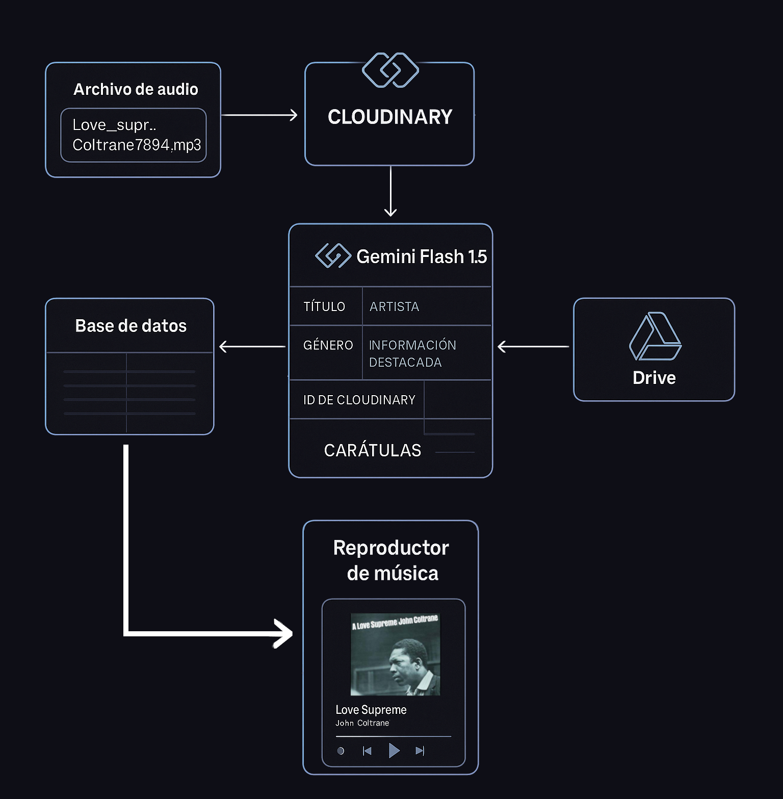

Selecciona una canción
para comenzar
Neologismo que fusiona la raíz maya K'ay (canto) y Lum (tierra), significando 'Canto de la Tierra'.
para comenzar
Daniel Ek, CEO de Spotify, ha liderado una inversión millonaria en Helsing, startup alemana especializada en drones de combate con inteligencia artificial. Este acto alimenta una infraestructura de dominación que afecta de manera desproporcionada al Sur Global.
Como respuesta, desde el Laboratorio de Arte Generativo impulsamos KAYLUM: una plataforma que ofrece a nuestra comunidad una alternativa para escuchar y compartir su música favorita sin suscripciones. El proyecto está potenciado por agentes automatizados que catalogan el acervo, haciendo posible que se actualice con solo subir canciones a un servidor, demostrando el poder de la automatización para liberar trabajo y no para precarizarlo.
Este proyecto, como cada una de nuestras iniciativas, busca demostrar que la tecnología no es inherentemente nociva. Es una herramienta poderosa que, usada de forma colectiva, nos permite construir proyectos potentes que fortalecen la autonomía y confrontan directamente los planes de la élite tecnofeudal.
Mientras ell@s dicen Guerra, nosotr@s decimos Paz. Por eso, la primera selección de este reproductor se basa en música que se ha posicionado contra la industria bélica. Somos conscientes de que un proyecto así desafía las nociones de propiedad intelectual, por lo que aclaramos que no existe fin de lucro alguno. Nuestra intención es el intercambio libre de la cultura.
Nuestra ambición trasciende el simple intercambio; soñamos con que este espacio evolucione hacia un refugio para l@s artistas independientes que rechazan mantener los privilegios de una élite que abusa de su trabajo. Invitamos a l@s artistas, músic@s, podcaster@s y experimentador@s sonoros a alojar sus creaciones en este espacio, construido por tod@s y para tod@s.